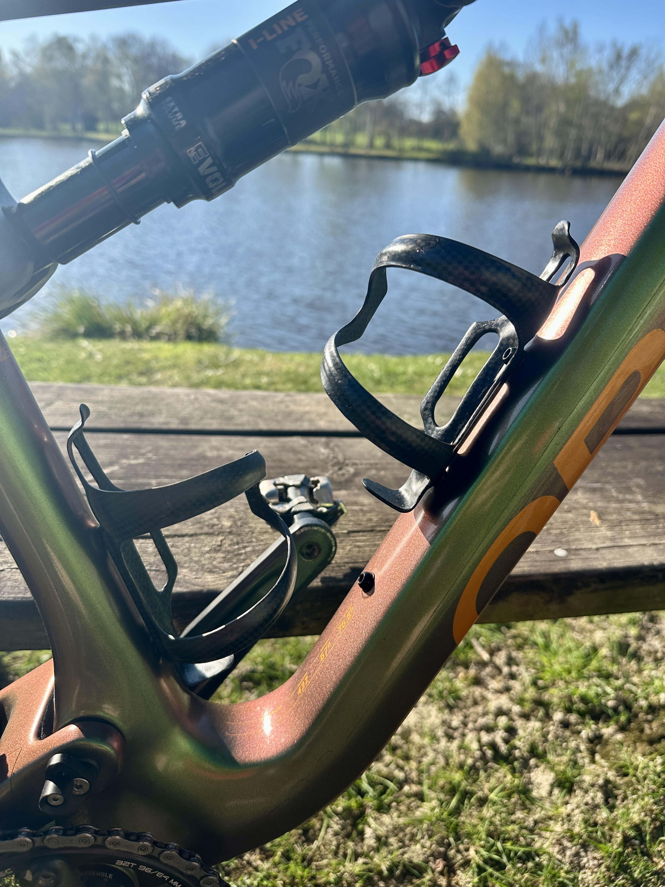

À propos de ce projet
Passionné de VTT, j’ai créé Ride & Test by FC pour partager mes retours d’expérience sur le matériel que j’utilise au quotidien. Vous trouverez ici des tests honnêtes, des photos, et mon avis de terrain sans filtre.
Mon objectif ? Informer, conseiller et inspirer d’autres riders à faire les bons choix pour leur monture.
Ce site me permet aussi de documenter l’évolution de mon vélo, mes préférences en matière de composants, et pourquoi pas de collaborer avec des marques ou passionnés.
Dernier test matos

Porte-gourde carbone ultra light
J’ai testé ces porte-gourdes en carbone annoncés à seulement 22g. Niveau poids, rien à dire ! Un article complet est dispo pour aller plus loin.